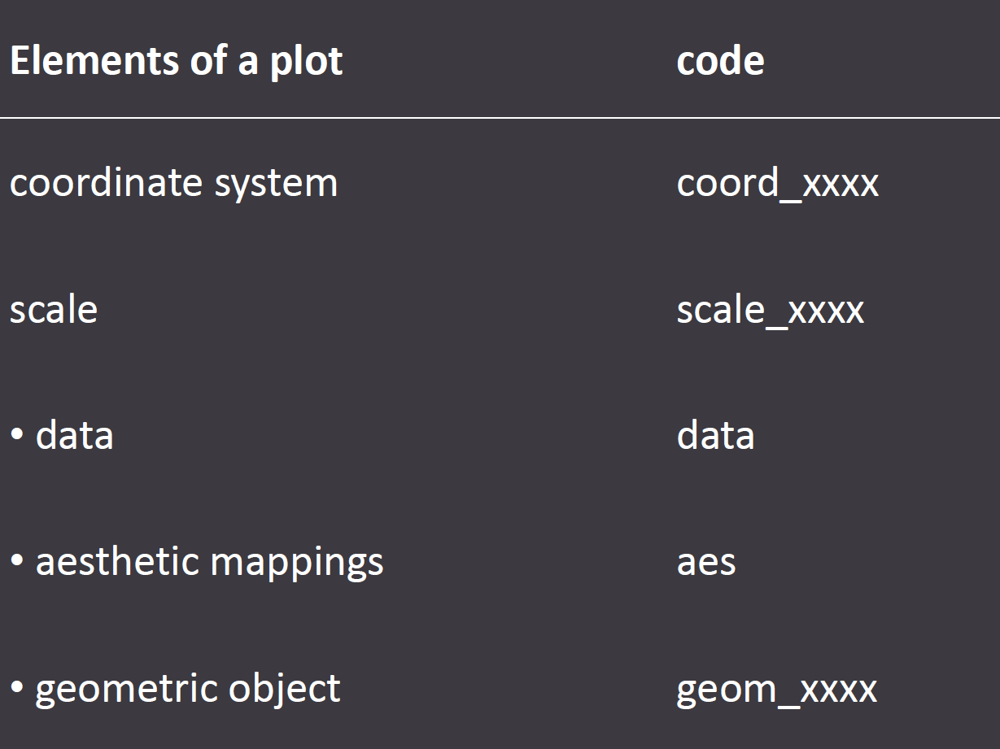
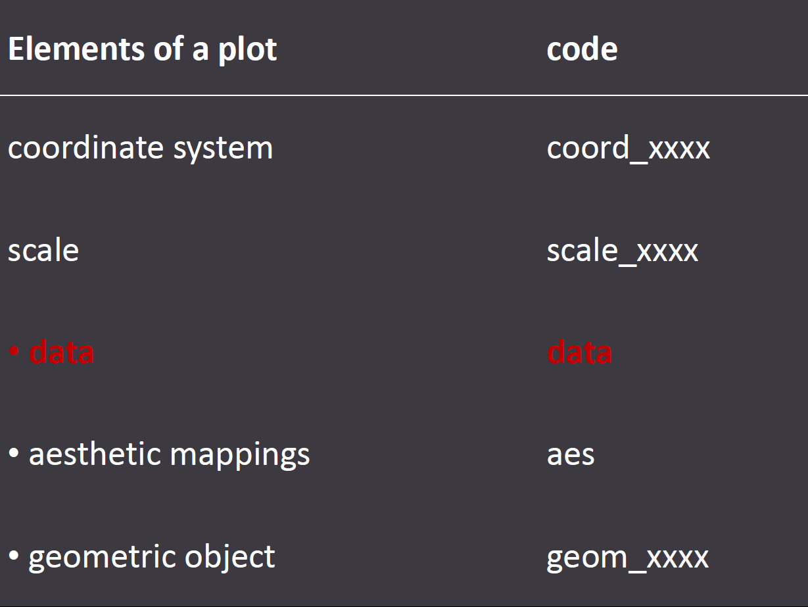

Ggplot2 is an amazing tool for static data visualization. It is not necessarily obvious to realize how powerful it is until you get a strong understanding of its underlying logic though: The Grammar of Graphics. Using ggplot2 without understanding its underlying logic is possible, like going to see a 3D movie without your 3D glasses... You can certainly do it, but don't expect to get the full experience.
GG theory
Understanding the Grammar of Graphics framework
Tony Fujs
Objective: Understand the gg framework
Setup
author("myDeck")
PRACTICE TIME!!

DRAW A SCATTER PLOT OF THE FOLLOWING DATASET
PRACTICE TIME!!
DESCRIBE THE STEPS YOU TOOK TO DRAW THE PLOT
Scatter plots: STEP 1
Start with your data set.

Scatter plots: STEP 2

Scatter plots: STEP 3

Scatter plots: STEP 4

Scatter plots: STEP 5

Grammar of graphic summary

DATA

Data
## year state stores
## 1 2005 FL 174
## 2 2005 MI 76
## 3 2005 NJ 41
## 4 2005 NV 22
## 5 2005 VT 4
- Code
data = mini_walmart
AESTHETIC MAPPING

Aesthetics: position
## year state stores
## 1 2005 FL 174
## 2 2005 MI 76
## 3 2005 NJ 41
## 4 2005 NV 22
## 5 2005 VT 4
aes(x = state,y = stores)
data = mini_walmart